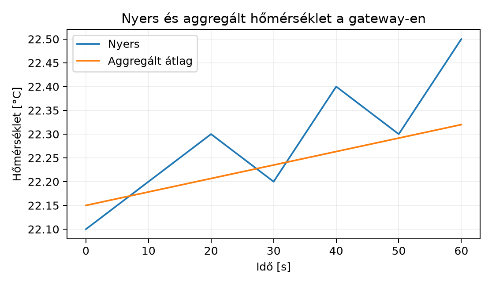

A TerraSense üvegházban a ts-node másodpercenként vagy
akár gyakrabban küld mérési adatot a ts-gw gateway-nek. A
gateway feladata nem csak a protokollfordítás: ha minden nyers mintát
azonnal továbbítana MQTT-n a felhőbe, az uplink folyamatosan terhelt
lenne, a mobil adatkeret hamar elfogyna, és a backend is nagyobb
számítási kapacitást igényelne. Ugyanakkor a felhasználót nem
feltétlenül érdekli, hogy a hőmérséklet 22,1 °C-ról 22,2 °C-ra
változott; elég, ha a jelentős változásról azonnal értesül, a lassú
trendről pedig percenkénti összegzést kap. A gateway ezért ideális hely
a helyi feldolgozásra: közel van az eszközökhöz, rendelkezik számítási
kapacitással, és csökkentheti a felhőbe küldött adatmennyiséget,
miközben a kritikus riasztások késleltetését alacsonyan tartja.
Definíció. A deadband (holtsáv) olyan szűrési szabály, amely szerint egy új mérési értéket csak akkor továbbítunk, ha az utolsó továbbított értéktől legalább egy előre megadott abszolút küszöbértékkel eltér. Ha az eltérés kisebb, az értéket eldobjuk vagy egy későbbi aggregálásba gyűjtjük.
Példa: ha a hőmérséklet-deadband 0,5 °C, akkor a 22,0 °C után csak akkor küldünk új értéket, ha a hőmérséklet 21,5 °C alá csökken vagy 22,5 °C fölé emelkedik. Ez a mechanizmus C++-ban egyszerűen egy előző-érték tárolással valósítható meg.
A hiszterézis (hysteresis) ennek általánosítása: a be- és kikapcsolási küszöb nem ugyanaz. Például egy fűtési riasztásnál a magas hőmérséklet riasztást 30,0 °C felett vált ki, de a riasztás csak 28,0 °C alatt szűnik meg. Ezzel elkerüljük, hogy az érték a küszöb körül lebegve másodpercenként kapcsolgassa a riasztást, ami zajos telemetriát és felesleges értesítéseket okozna.
Definíció. Az ablakos aggregálás során a beérkező mintákat időablakokba csoportosítjuk, és minden ablak végén egyetlen összegző üzenetet küldünk, amely statisztikai jellemzőket tartalmaz: minimum, maximum, átlag, esetleg szórás vagy minta darabszám.
Két fő ablaktípust különböztetünk meg:
A TerraSense gateway-ben az első változatban tumbling ablakot használunk: 60 másodperces ablakban számolunk minimumot, maximumot és átlagot.
Definíció. A helyi riasztás olyan, a gateway-en futó szabály, amely a bejövő mérési értékekből azonnal, felhő-kapcsolat nélkül is képes döntést hozni, és állapotváltozást jelezni. A riasztás lehet:
Ezek a riasztások a TerraSense-ben a
terrasense/<site>/<node>/state retained topicra
kerülnek, hogy a backend és a felhasználói felület is lássa a jelenlegi
állapotot.
Az alábbi táblázat azt foglalja össze, mikor érdemes a feldolgozást a gateway-en végezni a nyers felhőbe küldés helyett.
| Szempont | Nyers adat felhőbe | Deadband | Ablakos aggregálás |
|---|---|---|---|
| Sávszélesség-igény | Magas | Közepes | Alacsony |
| Információvesztés | Nincs | Kicsi (küszöb alatti változás) | Nagyobb (részletek elvesznek) |
| Riasztási késleltetés | Alacsony | Alacsony | Akár az ablak hossza |
| Tárolási költség | Magas | Közepes | Alacsony |
| Gateway CPU-terhelés | Alacsony | Alacsony | Közepes |
| Tipikus felhasználás | Hibakeresés, kalibráció | Hirtelen változások | Trend, élettartam, költség |
A TerraSense-ben a telemetria-topicra a deadband-szűrt azonnali értékek és a percenkénti aggregátumok is felkerülnek, de eltérő séma-mezőkkel; a részleteket az Adatformátumok: JSON, CBOR, Protocol Buffers, SenML alfejezet rögzíti.
Tegyük fel, hogy a ts-node 10 másodpercenként küld egy
nyers telemetria-üzenetet, amelynek mérete JSON-ban 86 B. A gateway
deadband-szűrést és 60 másodperces tumbling ablakot alkalmaz. Az
aggregált üzenet – amely tartalmazza a minimumot, maximumot és átlagot –
mérete 96 B, mert több mező van benne, de csak percenként egy ilyen
üzenet keletkezik.
Jelölje:
A naponta küldött üzenetek száma nyers esetben:
A napi nyers adatmennyiség:
Az aggregálással percenként egy üzenet keletkezik, tehát naponta:
A napi aggregált adatmennyiség:
A megtakarítás:
Tehát a gateway-en végzett ablakos aggregálás körülbelül
81,4% sávszélesség-megtakarítást eredményez.
Természetesen az információ egy része elvész: a percen belüli
ingadozások csak a minimum- és maximumértékben jelennek meg, az átlag
ezeket elrejti. Ezért az aggregátumboz mindig érdemes csatolni a
min és max mezőket is.
Az alábbi ábra illusztrálja a nyers és az aggregált adat megjelenését.

ts-gw-benMunkakönyvtár:
mkdir -p ~/iot-labor/i039 && cd ~/iot-labor/i039Ebben a laborban egy C++ modult készítünk, amelyet a
ts-gw szolgáltatás későbbi változata fog használni. A modul
három fő osztályt tartalmaz: DeadbandFilter,
TumblingWindowAggregator és ThresholdAlert. A
példában a mintákat egy egyszerű Sample struktúra
reprezentálja.
Fájl: edge_aggregator.h
#pragma once
#include <cstdint>
#include <vector>
struct Sample {
double temperature; // °C
double humidity; // %RH
double soil_moisture; // %
uint64_t ts; // epoch ms, UTC
};
struct AggregatedSample {
uint64_t window_start;
double temp_min, temp_max, temp_avg;
double hum_min, hum_max, hum_avg;
double soil_min, soil_max, soil_avg;
uint32_t count;
};
class DeadbandFilter {
public:
explicit DeadbandFilter(double threshold);
bool should_forward(const Sample& s);
private:
double threshold_;
bool has_last_{false};
Sample last_;
};
class TumblingWindowAggregator {
public:
explicit TumblingWindowAggregator(uint64_t window_ms);
void add(const Sample& s);
bool ready(uint64_t now) const;
AggregatedSample aggregate();
private:
uint64_t window_ms_;
bool has_start_{false};
uint64_t window_start_{0};
std::vector<Sample> buffer_;
};
class ThresholdAlert {
public:
ThresholdAlert(double high_threshold, double low_threshold,
uint64_t min_duration_ms);
void update(const Sample& s);
bool is_active() const;
private:
double high_;
double low_;
uint64_t min_duration_ms_;
bool active_{false};
uint64_t since_{0};
};Fájl: edge_aggregator.cpp
#include "edge_aggregator.h"
DeadbandFilter::DeadbandFilter(double threshold) : threshold_(threshold) {}
bool DeadbandFilter::should_forward(const Sample& s) {
if (!has_last_) {
last_ = s;
has_last_ = true;
return true;
}
double diff = s.temperature - last_.temperature;
if (diff < 0) diff = -diff;
if (diff >= threshold_) {
last_ = s;
return true;
}
return false;
}
TumblingWindowAggregator::TumblingWindowAggregator(uint64_t window_ms)
: window_ms_(window_ms) {}
void TumblingWindowAggregator::add(const Sample& s) {
if (!has_start_) {
window_start_ = s.ts;
has_start_ = true;
}
buffer_.push_back(s);
}
bool TumblingWindowAggregator::ready(uint64_t now) const {
return has_start_ && (now - window_start_) >= window_ms_;
}
AggregatedSample TumblingWindowAggregator::aggregate() {
AggregatedSample out{};
out.window_start = window_start_;
out.count = buffer_.size();
for (const auto& s : buffer_) {
if (out.count == 0) break;
if (s.temperature < out.temp_min || out.count == 1)
out.temp_min = s.temperature;
if (s.temperature > out.temp_max || out.count == 1)
out.temp_max = s.temperature;
out.temp_avg += s.temperature;
// hasonlóan a humidity és soil mezőkhöz
out.hum_min = out.hum_min < s.humidity ? out.hum_min : s.humidity;
out.hum_max = out.hum_max > s.humidity ? out.hum_max : s.humidity;
out.hum_avg += s.humidity;
out.soil_min = out.soil_min < s.soil_moisture ? out.soil_min : s.soil_moisture;
out.soil_max = out.soil_max > s.soil_moisture ? out.soil_max : s.soil_moisture;
out.soil_avg += s.soil_moisture;
}
if (out.count > 0) {
out.temp_avg /= out.count;
out.hum_avg /= out.count;
out.soil_avg /= out.count;
}
buffer_.clear();
has_start_ = false;
return out;
}
ThresholdAlert::ThresholdAlert(double high_threshold, double low_threshold,
uint64_t min_duration_ms)
: high_(high_threshold), low_(low_threshold),
min_duration_ms_(min_duration_ms) {}
void ThresholdAlert::update(const Sample& s) {
if (!active_) {
if (s.temperature > high_) {
since_ = s.ts;
active_ = true;
}
} else {
if (s.temperature < low_) {
if (s.ts - since_ >= min_duration_ms_) {
active_ = false;
}
}
}
}
bool ThresholdAlert::is_active() const {
return active_;
}Fájl: main.cpp
#include "edge_aggregator.h"
#include <iostream>
#include <iomanip>
int main() {
const uint64_t start = 1'700'000'000'000ULL; // példa epoch ms
DeadbandFilter deadband(0.5);
TumblingWindowAggregator agg(60'000);
ThresholdAlert alert(30.0, 28.0, 5 * 60'000);
std::cout << std::fixed << std::setprecision(1);
for (int i = 0; i < 12; ++i) {
uint64_t now = start + i * 10'000;
double temp = 22.0 + (i % 5) * 0.1;
if (i == 8) temp = 23.0;
Sample s{temp, 55.0, 40.0, now};
if (deadband.should_forward(s)) {
std::cout << "Deadband forward: " << temp << " °C\n";
}
agg.add(s);
if (agg.ready(now)) {
auto a = agg.aggregate();
std::cout << "Aggregated window " << a.window_start
<< ": avg=" << a.temp_avg << ", min=" << a.temp_min
<< ", max=" << a.temp_max << ", count=" << a.count << "\n";
}
alert.update(s);
if (alert.is_active()) {
std::cout << "Alert active at " << temp << " °C\n";
}
}
return 0;
}Build és futtatás:
g++ -std=c++20 -Wall -Wextra -o edge_agg_test main.cpp edge_aggregator.cpp
./edge_agg_testVárt kimenet:
Deadband forward: 22.0 °C
Deadband forward: 23.0 °C
Aggregated window 1700000000000: avg=22.3, min=22.0, max=23.0, count=6Az első ablak 6 mintát tartalmaz, mert a 60 másodperces ablak 6 darab 10 másodperces mintát fed le. A deadband-szűrő az első mintát mindig továbbítja, majd csak a 0,5 °C-ot meghaladó változást, ami itt a 8. mintánál következik be.
A modul működését unit tesztekkel ellenőrizhetjük, például a Google
Test keretrendszerrel, de a fenti egyszerű main is alkalmas
a kézi validálásra.
| Tünet | Lehetséges ok | Javítás |
|---|---|---|
| A deadband nem továbbít, pedig nagy a változás | A küszöbérték túl nagy, vagy a last_ nem frissül |
Csökkentsd a küszöböt, ellenőrizd a should_forward
logikát |
| Az aggregátor nem ad ki eredményt | A ready visszatérési feltétele hibás, vagy az ablak
hossza rossz |
Ellenőrizd, hogy a now epoch ms, és az ablak
window_ms_ ugyanabban az egységben van |
| A riasztás nem szűnik meg | A hiszterézis alsó küszöbe magasabb, mint a jelenlegi hőmérséklet, vagy a minimális időtartam nem telt le | Ellenőrizd a low_ és min_duration_ms_
értékeit |
| Az átlag irreálisan magas | A buffer_ nem ürül az aggregálás után, vagy az
avg számításnál nem osztasz a darabszámmal |
Ellenőrizd az aggregate metódust |
TumblingWindowAggregator osztályt úgy, hogy 60 másodperces
sliding ablakot valósítson meg 10 másodperces csúszással! A laborban
készített modulban add hozzá a SlidingWindowAggregator
osztályt, és teszteld le a main.cpp-ben.SlidingWindowAggregator rendelkezik egy
std::deque<Sample> pufferrel, és minden
slide hívásnál a now - window_ms_-nél régebbi
elemeket eldobja, majd a maradékból aggregál.ThresholdAlert::update
metódusban, hogy az active_ állapotból való kilépés
feltétele helyes-e: a hőmérsékletnek a low_ küszöb alá kell
esnie, és a since_ óta el kell telnie a
min_duration_ms_ időtartamnak. Ha a hőmérséklet 25 °C, az
valószínűleg a low_ (például 28 °C) alatt van, de lehet,
hogy a min_duration_ms_ még nem telt le, vagy a
since_ nem frissül, mert az update metódus nem
hívódik meg rendszeresen.A gateway-en végzett helyi feldolgozás csökkenti a felhőbe irányuló
adatforgalmat és költséget, miközben a kritikus riasztások késleltetése
alacsony marad. A deadband-szűrés csak a jelentős változásokat
továbbítja, a hiszterézis pedig megakadályozza a riasztási lebegést. A
tumbling ablakos aggregálás percenként egy min/max/átlag üzenetet állít
elő, ami az adott példában körülbelül 81%-os megtakarítást eredményez. A
laborban elkészült az edge_aggregator.h/cpp modul, amely a
DeadbandFilter, TumblingWindowAggregator és
ThresholdAlert osztályokat tartalmazza. Továbbvitt
eredmény. Az aggregált telemetria továbbra is a
terrasense/<site>/<node>/telemetry topicra
kerül, de az üzenet tartalmaz egy agg objektumot
window_start, min, max,
avg és count mezőkkel; ezt a konvenciót
használja az Idősoros adatbázisok és
adatmodellezés és az Eseményvezérelt
feldolgozás: Kafka. A helyi riasztás állapota a
terrasense/<site>/<node>/state retained topicra
kerül local_alert mezővel, amelyet az Riasztás: szabályok, értesítés, riasztási fáradtság
alfejezet használ fel.
std::deque, std::vector
és az időkezelő függvények viselkedése ismert; azonban a
main.cpp-ben használt epoch ms értékek illusztratívak,
valós rendszerben a std::chrono és a rendszeridő UTC-ből
való leképzését ellenőrizni kell.agg séma
a jelen alfejezetben rögzített konvenció, amelyet az Adatformátumok: JSON, CBOR, Protocol Buffers, SenML
alfejezetnek kell véglegesítenie.